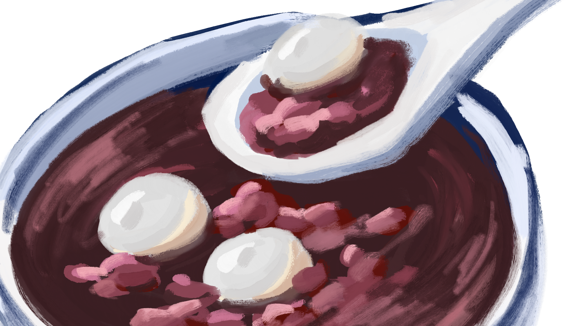
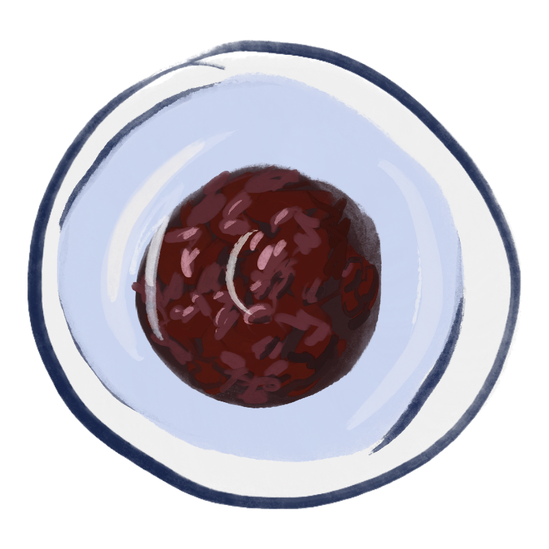
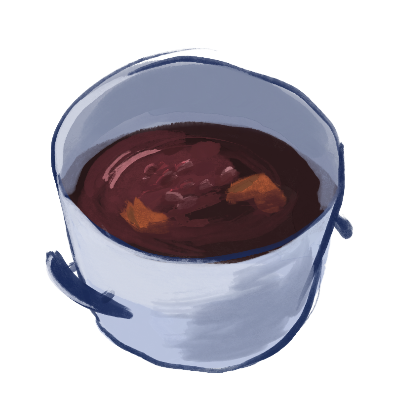
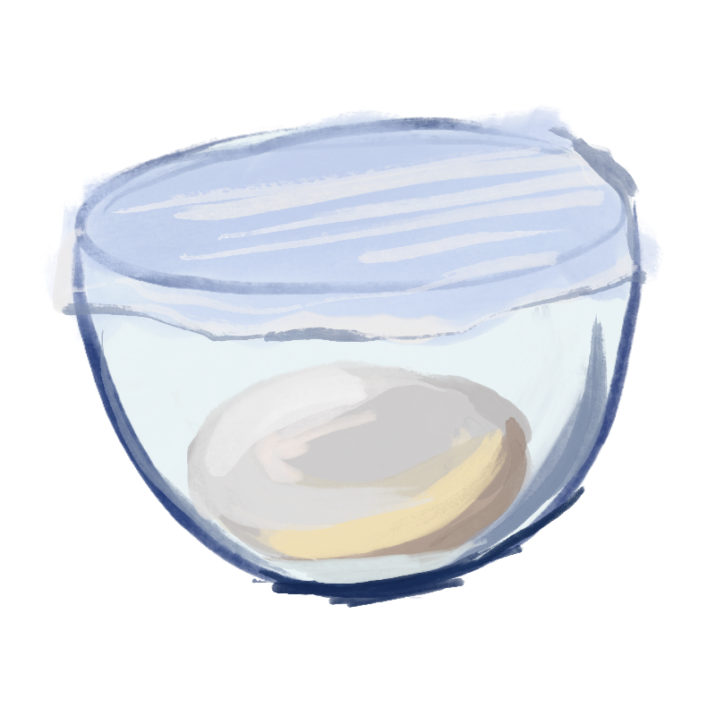
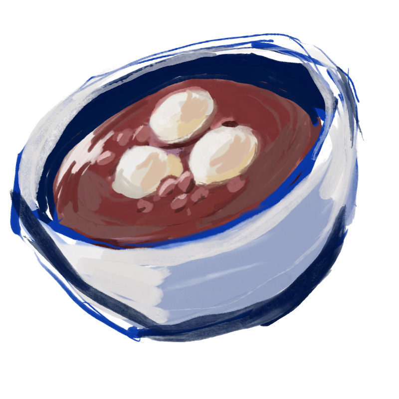

Red Bean Soup (红豆汤)

Soft and chewy tang yuan (sticky rice balls/mochi balls) served in sweet red bean soup is another variety of tang yuan recipes you will enjoy to celebrate the Chinese dongzhi festival or as a tong sui dessert.
Instructions
Step 1: Rehydrate the dried Mandarin peel. Soak the dried peels in warm water for 15 minutes or until soft. Scrape off the white part in the peel.

Step 2: Soak the red beans. Pour enough water to cover the red beans and soak for at least 4 hours. Discard the soaking water.

Step 3: Cook on the stove. Put the beans, dried peel, and water in a large pot and bring to a boil. Then, lower the heat to let it simmer for about 1 hour or until the beans are soft. When you are happy with the consistency, stir in brown sugar.

Step 4: Prepare the tang yuan dough. Mix glutinous rice flour and icing sugar in a mixing bowl. Add the boiling hot water. Stir to mix with a spatula. When it cools enough, hand mix and knead into a non-sticky dough. Add water as needed to form a dough. Cover it with plastic wrap to prevent it from drying.
Step 5: Form the dough balls. Pinch off about 8-10 grams of dough and then roll into small balls. Keep the small balls covered with plastic wrap too. Continue with the rest.
Step 6: Cook the tang yuan. Bring a large pot of water to a rolling boil. Add the tang yuan and cook until they float to the top. Then, cook for 1 more minute. Use a slotted spoon to remove them from the pot and submerge in cold water briefly to stop the cooking process and to prevent them from sticking.

Step 7: Serve hot. Ladle the sweet red bean soup into serving bowls and add as many tang yuan as you'd like!
Storage Instructions
Leftover sweet red bean soup can be stored in the fridge for up to one week. The tang yuan can be stirred into the soup and kept in the soup. They will soften when reheated on the stove or in the microwave.